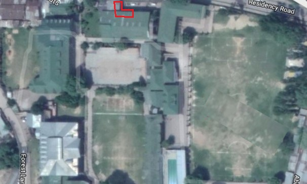

The fee counters are the old school way to pay the school fee where the parents have to stnad in queues for hours to clear the debts. The fee counters are accessible from both outside and inside of the school campus. The fee counters are also used by parents to fetch any kind of information about their ward ,e.g., due debt, fines, etc.
The location of the department is shown in the following map.
